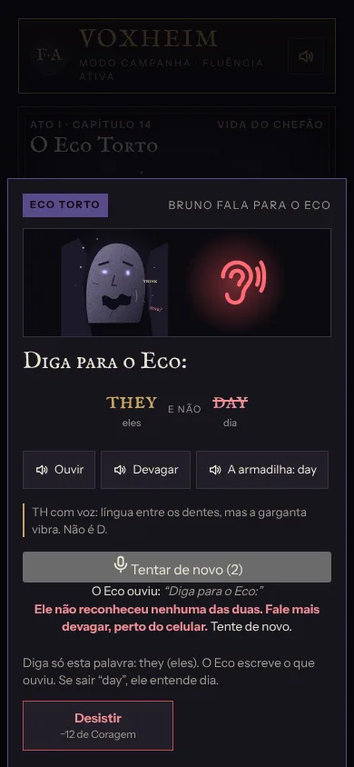
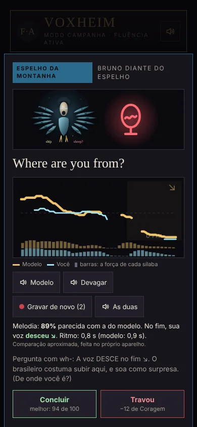
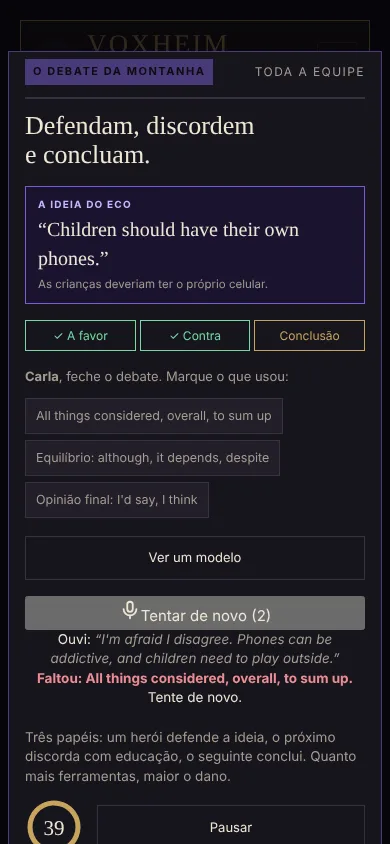
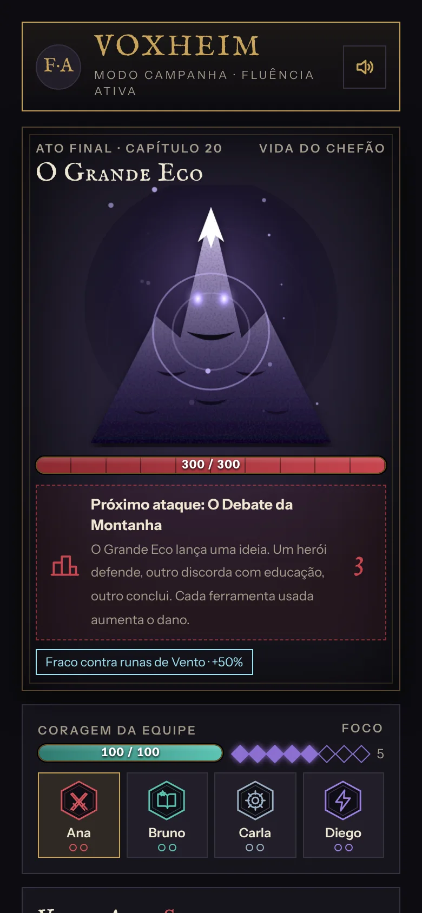
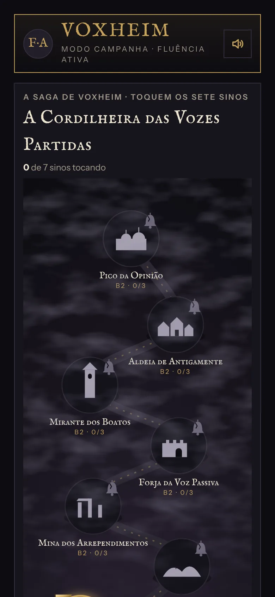
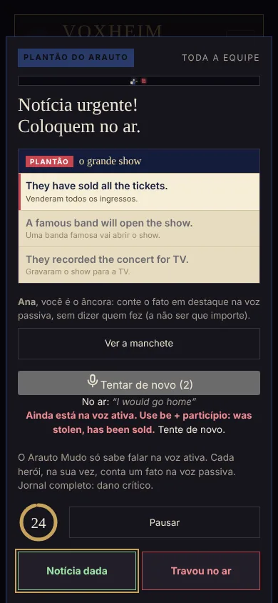
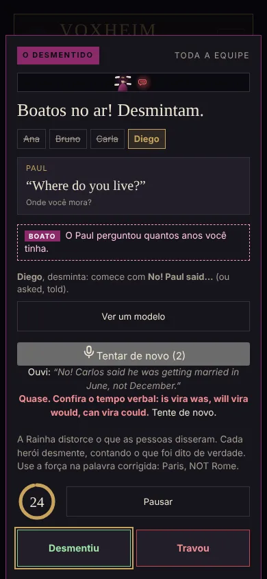
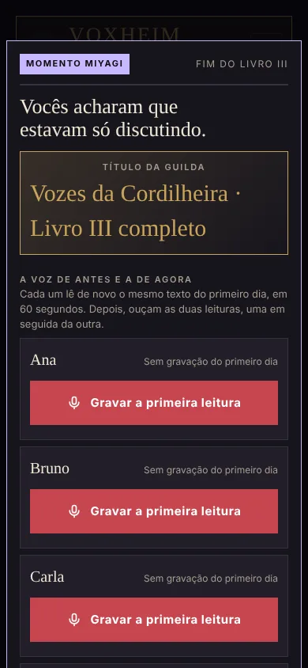

Voxheim transforma a aula numa campanha de fantasia. Cada frase dita em voz alta é um golpe contra os chefões do Silêncio. Quem trava, perde coragem. Quem fala, vence.
Não falta conteúdo. Falta repetição falada, com pressão de verdade, num lugar onde errar é parte do jogo.
O aluno entende, completa exercícios, acerta a prova, e mesmo assim não abre a boca.
Tocar na resposta certa todo dia gera sequência de dias, mas pouca fala de verdade.
“I have 30 years”, “I am agree”, o “i” no fim das palavras. Os erros de quem fala português pedem treino próprio.
De 2 a 4 alunos e um professor, num celular ou numa TV. Cada aluno escolhe uma classe e entra no Reino de Voxheim.
Ouvir, repetir, montar a frase, responder sem modelo. Cada degrau de fala vira dano. Os chefões contra-atacam com os erros típicos do brasileiro.
No primeiro dia, cada aluno grava a própria voz. No fim de cada livro, grava de novo: o Momento Miyagi mostra o quanto ele mudou.
Um jogo cooperativo em grupo, raro entre os apps de inglês. O professor conduz e a turma joga junta.
Cada capítulo ataca os tropeços de quem fala português: o “I am agree”, o “I have 30 years”, o “should have went”, o “cook-ed”.
O Eco escreve o que entendeu: diga “sink” querendo “think” e ele afunda a guilda. O Espelho compara a melodia da sua voz com a do modelo.
No modo solo, dois companheiros erram de propósito para o aluno corrigir, e o reconhecimento de fala confere o que ele disse.
Abre no navegador, instala como app no celular e funciona offline. Sem cadastro e sem baixar nada da loja.
Do primeiro “I am” até falar com a própria voz, em cinco livros, 35 capítulos, duas ilhas extras e mais de 100 chefões.
Não é a mesma lição repetida com outra cor. Cada chefão final pede um jeito diferente de falar: do Eco Torto ao Termômetro do Tom, da Travessia do Oceano ao Discurso de 20 Segundos.

O aluno fala para o Eco, e o Eco mostra o que entendeu. “Ele entendeu day. Você queria they.” A dica de como pôr a boca aparece na hora.

O aluno grava a frase e vê a melodia da própria voz sobre a do modelo. A pergunta subiu ou desceu no fim? O ritmo ficou parecido?

Um aluno defende a ideia, outro discorda com educação, outro conclui. Cada ferramenta usada (because, however, all things considered) aumenta o dano.





Cada livro é um continente no Atlas de Voxheim, com sete regiões e um chefão final. Os cinco estão prontos para jogar, e duas ilhas extras trazem inglês temático.
Apresentar-se, rotina, passado, futuro. Termina no Grande Silêncio.
Pronto para jogarPresent perfect, comparações, conselhos, condicionais, phrasal verbs.
Pronto para jogarPronúncia, conditionals, voz passiva, reported speech e debate.
Pronto para jogarExpressões, formal e informal, negociação, histórias, suavizar e enfatizar, sotaques.
Pronto para jogarIronia e humor, persuasão, improviso, registro de nativo, discurso e a última batalha pela própria voz.
Pronto para jogarInglês de viagem: imigração, hotel, restaurante, direções e imprevistos.
Pronto para jogarInglês das corridas: rádio da equipe, estratégia, narração ao vivo e entrevista depois da bandeirada.
Novo · pronto para jogar| Apps de exercício | Apps de conversa com IA | Aula particular | Voxheim | |
|---|---|---|---|---|
| Quanto o aluno fala | Pouco: muito toque na tela | Bastante | Bastante | Bastante, em voz alta e em grupo |
| Jogo em grupo | Não | Não | Não | Sim, cooperativo, com professor |
| Erros típicos do brasileiro | Raramente | Raramente | Depende do professor | No centro do método |
| Sequência gramatical | Leve | Variável | Depende do professor | Do A1 ao C2, capítulo a capítulo |
| Prova de evolução | Pontos e sequência de dias | Relatórios | Percepção do professor | A própria voz, antes e depois |
| Funciona sem internet | Em parte | Não | — | Sim |
Não. O Voxheim abre no navegador do celular, do computador ou da TV. Se quiser, dá para instalar como app pelo próprio navegador, sem passar pela loja.
O jogo foi pensado para um professor conduzir uma guilda de 2 a 4 alunos. Também existe o modo solo, com dois companheiros virtuais e reconhecimento de fala, para o aluno praticar sozinho.
Tem. As ilhas extras do Atlas trazem inglês para situações específicas: o Porto dos Viajantes, para viagem, e o Autódromo das Vozes, para quem gosta de corrida, com rádio da equipe, narração ao vivo e entrevista depois da bandeirada. O Autódromo serve para todos os níveis: cada aluno joga no próprio degrau.
Do A1 ao C2, em cinco livros. O aluno pode começar do zero ou fazer o teste de nivelamento, a Prova dos Portões (uns 6 minutos), e entrar direto no livro do nível dele.
Cada aluno tem a sua Jornada, com as frases praticadas, aprendidas e fixadas, e um troféu por capítulo, de bronze a platina. A platina só vem com frases fixadas em dias diferentes. E no fim de cada livro, o Momento Miyagi compara a voz do aluno no começo e no fim.
Sim. Depois de aberto uma vez, o jogo fica guardado no aparelho, e as vozes de cada capítulo ficam guardadas assim que ele é jogado. Só o reconhecimento de fala depende da internet, e funciona melhor no Chrome.
O Voxheim está em fase de piloto com as primeiras turmas. Fale com a gente para conhecer as condições para professores, escolas e empresas.
A demonstração é gratuita e abre direto no navegador.